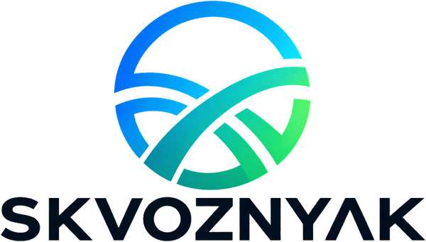

Өтелімділік көрінбейді
Жарнама кабинеті лидтер мен олардың құнын көрсетеді, бірақ әр дереккөздің нақты қанша табыс әкелгенін ашпайды.
SKVOZNYAK жарнаманы, клиенттердің өтініштерін және CRM деректерін бір басқару жүйесіне біріктіреді. Қай науқандар нақты сатылым әкелетінін, ал қайсысы бюджетті жұмсайтынын көріңіз.
Жарнама кабинеті, WhatsApp және CRM бір-бірінен бөлек жұмыс істесе, маркетинг тек аралық көрсеткіштермен бағаланады. SKVOZNYAK шығынды нақты нәтижемен байланыстыруға көмектеседі.
Жарнама кабинеті лидтер мен олардың құнын көрсетеді, бірақ әр дереккөздің нақты қанша табыс әкелгенін ашпайды.
Жарнама кабинеттері, CRM және кестелердегі деректерді қолмен біріктіруге тура келеді. Мұндай есеп тез ескіреді.
Жарнама науқандары күн сайын өзгереді, бірақ өзгерістердің себептері мен нәтижелері көбіне тіркелмейді.
Жүйе маркетинг пен сатылым воронкасының барлық кезеңін байланыстырады.
SKVOZNYAK кезең-кезеңімен дамып келеді. Қолжетімді интеграциялар мен модульдер пилотқа қосылу кезінде нақтыланады.
Қай науқан, жарнама тобы және хабарландыру клиенттер мен сатылымдар әкелгенін біліңіз.
Күнделікті басқару көрсеткіштері: бюджет, өтініштер, сатылымдар, табыс және өзгеріс динамикасы.
Көрсеткіштерді, қабылданған шешімдерді және олардың нәтижеге ықпалын контексті жоғалтпай тіркеңіз.
Қолдау көрсетілетін арналардағы контентті, жарияланымдарды және қаралымдар динамикасын бақылаңыз.
Жарнаманы өтініштермен, лидтерді іріктеумен, мәмілелермен және төлемдермен байланыстырыңыз.
Деректерге қатысты сұрақтарға жауап беретін, гипотеза ұсынатын және басқарушылық кеңес беретін ЖИ-көмекшіні дамытып жатырмыз.
Decision Timeline шешім қабылданған сәттегі көрсеткіштерді сақтайды. Бюджет не креатив өзгергеннен кейінгі нәтижені бұрынғы жағдаймен салыстыруға болады.
Демоға жазылу ↗Интеграциялардың нақты құрамын және қосылу мерзімін сіздің инфрақұрылымыңызға қарай келісеміз.
Толық маркетингтік аналитика мен басқарушылық есептерді пилоттық іске қосуға арналған базалық пакет.
Қосымша интеграциялар, арнайы есептер және жеке модульдердің құны бөлек есептеледі.
SKVOZNYAK маркетингті талдау және басқару жүйесі ретінде жасалып жатыр. CRM интеграциялары мен қосымша CRM модульдері бөлек талқыланады.
Архитектура Meta, Google, TikTok және басқа дереккөздерді қарастырады. Нақты қосылу мүмкіндігі аккаунт пен API рұқсаттары тексерілгеннен кейін расталады.
Иә. Интерфейс пен аналитика сценарийлерін үлгі деректер арқылы көрсетіп, содан кейін пилот көлемін анықтаймыз.
Қолдау көрсетілетін API арқылы деректер автоматты жаңара алады. Жаңару жиілігі мен тарихи деректер көлемі дереккөзге және интеграция баптауларына байланысты.
Өнім пилоттық әзірлеу кезеңінде. Функциялар біртіндеп енгізіледі, ал іске қосылатын мүмкіндіктер тізімі қосылу кезінде келісіліп бекітіледі.
Воронкаңыздың құрылымын, дереккөздерді және пилот мүмкіндігін талқылау үшін байланыс деректеріңізді қалдырыңыз.
